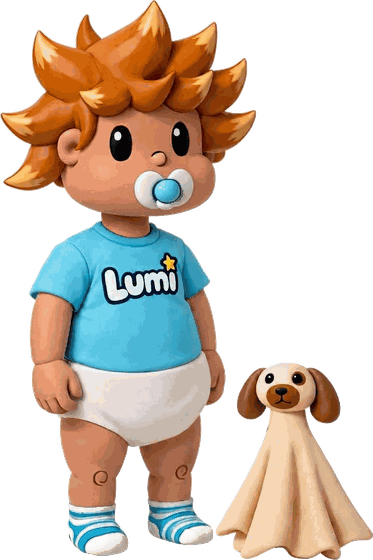
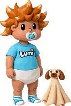

A Lumi acompanha as crianças da Unidade de Queimados depois de irem para casa
Uma plataforma para a criança, para quem cuida dela e para a equipa que a segue — com perguntas feitas à medida da idade e uma mascote que explica o caminho.
Como funciona
Apoio em cada fase da recuperação
Na unidade
Antes da alta, a equipa regista a extensão e a profundidade da queimadura, as cirurgias, quem cuida da criança em casa e a escola ou creche a que vai regressar. É daí que nasce o plano de seguimento.
Em casa
Nos marcos definidos — 2 semanas, 3 e 12 meses depois da alta, e depois todos os anos — chega um questionário curto. Até aos 4 anos responde quem cuida; a partir daí a criança responde às caras e aos itens que são dela.
Na consulta e na escola
A equipa vê a evolução, é avisada quando alguma coisa se desvia, e acompanha o regresso à escola — o resultado que em pediatria ocupa o lugar do regresso ao trabalho.
A Lumi cresce com a criança
Seis idades, porque três anos e dezassete anos não são a mesma coisa
Um jovem de catorze anos que abre a plataforma e encontra um bebé de fralda percebe de imediato que aquilo não é para ele — e deixa de ler o resto. A figura é o primeiro sinal de a quem o ecrã está a falar, e por isso acompanha a idade de quem a vê. Os questionários mudam noutras idades, onde a validação dos instrumentos muda: aos 5, aos 8 e aos 11 anos.

A mantinha-cão acompanha-a sempre: ao colo em bebé, porta-chaves na mochila mais tarde.
Aceder à plataforma
Entre na sua área
Quem cuida da criança acede com uma conta criada pela equipa clínica no momento da alta. Os profissionais de saúde acedem com as suas credenciais institucionais.
Segurança do login
- Conta criada apenas pela equipa clínica, em nome de quem exerce as responsabilidades parentais — sem auto-registo.
- Ativação por código de utilização única, válido 48h, enviado por SMS ou email.
- Autenticação de dois fatores em ambos os portais.
- Cada perfil só acede aos dados a que tem direito (família: os da sua criança; profissional: os da sua unidade).
- Dados cifrados em trânsito e em repouso; sessões com expiração automática.
- Todos os acessos ficam registados, como exige o tratamento de dados de saúde de menores.
É profissional e precisa de ativar o acesso de uma família? Crie a conta a partir da ficha da criança.
Instrumentos incluídos
Os que têm evidência
em crianças queimadas
A revisão sistemática de Griffiths e colegas (Burns 2015) percorreu 6250 artigos e encontrou 32 instrumentos usados em investigação de queimaduras pediátricas. Destes, apenas três tinham evidência psicométrica obtida nesta população: o PSQ, o SCQ e o Burn Outcomes Questionnaire. São esses que estão aqui, ao lado dos instrumentos de dor e de prurido desenhados para crianças.
Os resultados medidos são os do núcleo de valor em queimados (Spronk e colegas, Burns 2024), com uma troca: onde os adultos têm o regresso ao trabalho, as crianças têm o regresso à escola.
Cada instrumento está modelado em HL7 FHIR desde a origem — pronto para integração futura com o SClínico pela camada de interoperabilidade da SPMS.
| Instrumento | Mede | Idade |
|---|---|---|
| BOQ 0-5 / 5-18 / 11-18 | Função, aparência, escola, impacto na família | 0-17 |
| FLACC | Dor observada por quem cuida | 0-4 |
| FPS-R | Dor, em caras | 5-10 |
| NRS Dor | Dor, 0 a 10 | 11-17 |
| Itch Man Scale | Prurido | 0-17 |
| POSAS 3.0 | Cicatriz, pela criança ou por quem cuida | 0-17 |
| PSQ | Estigma percebido | 8-17 |
| SCQ | Conforto social | 8-17 |
| CRIES-8 | Sintomas pós-traumáticos | 11-17 |
| EQ-5D-Y | Qualidade de vida genérica | 11-17 |